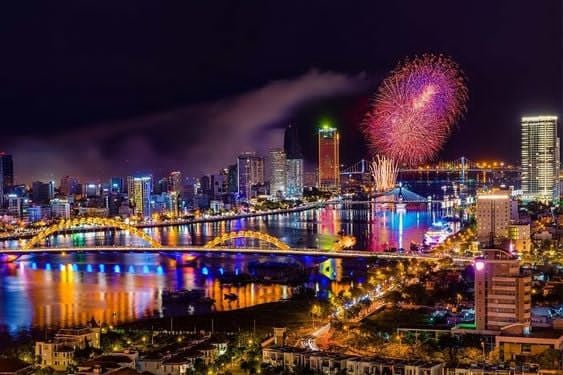
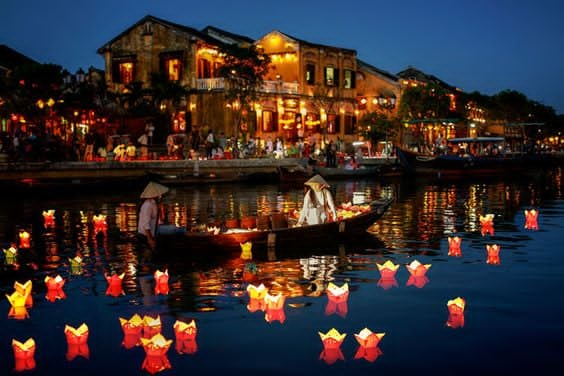
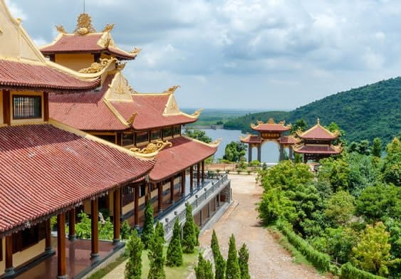

DAY 1: SAI GON – DA NANG (LUNCH, DINNER)
- - Take a flight from Saigon to Da Nang.
- - Upon arrival, the tour guide and driver will pick up the group and transfer to the hotel for check-in and rest.
- - Lunch at a restaurant.
- - The tour guide and driver will take you on a city tour to admire the sights of Han River Bridge, Thuan Phuoc Bridge, and Dragon Bridge – the largest and most unique steel arch bridge in Vietnam, which breathes fire and water on weekends.
- - Visit Love Bridge, the Carp Turns into a Dragon Statue, and APEC Park.
- - Visit the Cham Sculpture Museum: one of the largest and most important museums in Vietnam, housing and displaying a rich collection of over 2,000 precious ancient artifacts from the renowned Champa culture and sculpture.
- - Continue to visit Son Tra Peninsula – known as the green lung of Da Nang and home to many rare animals such as the red-shanked douc, wildcats... Visit Linh Ung Pagoda, one of the four sacred pagodas in Da Nang, where you can see the 65m-high statue of the Goddess of Mercy facing the sea. Return to the hotel to rest, swim, or use the pool.
- - Enjoy a seafood buffet at Doc Moc Restaurant.
- - The group will watch the Dragon Bridge breathe fire and water at night.
- - You will have free time to stroll around the city, exploring shopping centers, food streets, cafes, and bars.
- - Overnight in Da Nang
DAY 2: DA NANG – BA NA HILL – HOI AN (BREAKFAST, LUNCH, DINNER)
- - Breakfast at the hotel.
- - Depart for Ba Na Hills. Enjoy the cable car system, which holds several world records and is recognized as one of the 10 most impressive cable car systems in the world.
- - Lunch at a restaurant
- - After the cable car ride, the vehicle will transfer the group to hotel, take a rest, free to visit My Khe beach.
- - Dinner at a restaurant.
- - Overnight in Da Nang.
DAY 3: DA NANG – NGU HANH SON - ĐÀ NẴNG – NGŨ HÀNH SƠN – STONE CARVING VILLAGE – HOI AN (BREAKFAST, LUNCH, DINNER)
- - Enjoy breakfast at the hotel.
- - Transfer to visit the Marble Mountains tourist area, consisting of five limestone mountains representing the five elements. Visitors can explore Thuy Son, the only accessible mountain, featuring various artificial and natural architectural structures: Linh Ung Pagoda, Tam Thai Pagoda, Huyen Khong Cave, Tang Chon Cave, and Hoa Nghiem Cave. Stroll through the Stone Carving Village at the foot of the mountain.
- - Arrive in Hoi An and have lunch.
- - Take a walking tour of the ancient town of Hoi An: visit the Fujian Assembly Hall, Museum, centuries-old houses, and the Japanese Covered Bridge, built in the early 17th century, a unique and beloved symbol of Hoi An.
- - Dinner at a restaurant.
- - Enjoy the "Hoi An Memories" show.
- - Overnight in Hoi An.
DAY 4: DA NANG – VINWONDER NAM HOI AN – RIVER SAFARI – HOI AN (BREAKFAST, LUNCH)
- - Enjoy breakfast at the hotel.
- - The group will depart for VinWonders Nam Hoi An amusement park
- - Explore the Folk Culture Island, admire the unique original houses, and craft handmade items in the traditional craft village
- - Take a boat tour to visit the River Safari zoo
- - Lunch at a restaurant
- - Stroll or bike around the ancient town.
- - Dinner on your own.
- - Overnight in Hoi An

DAY 5: HOI AN – HUE – THIEN MU PAGODA (BREAKFAST, LUNCH, DINNER)
- - Enjoy breakfast at the hotel.
- - Depart for Hue via Hai Van Tunnel, stopping to visit and take photos at Lang Co Bay.
- - Lunch at Be Than Restaurant in Lang Co, with a view of Lang Co Bay.
- - Check in at the hotel and rest.
- - The vehicle and tour guide will take you to visit the Imperial City of Hue (the palace of 13 Nguyen dynasty kings) with attractions such as the Temple of Literature, Library, Hien Lam Pavilion, Thai Hoa Palace, Nine Dynastic Urns, and Ngo Mon Gate. Visit Thien Mu Pagoda, a pagoda linked with Hue’s culture and history.
- - Dinner at Hoa Vien Restaurant.
- - Enjoy a Hue folk music show on the Perfume River.
- - Overnight in Hue.
DAY 6: HUẾ - TU DUC TOMB – HUONG THUY XUAN VILLAGE (BREAKFAST, LUNCH, DINNER)
- - Breakfast at the hotel
- - The tour continues with a visit to Tu Duc Tomb – renowned as one of the most beautiful structures of the Nguyen Dynasty, featuring traditional yet refined architecture, surrounded by lush greenery and tranquil lakes, creating a poetic and romantic atmosphere.
- - Proceed to the Village of Making Incense and Conical Hat – a traditional craft village in Hue, attracting many tourists for its vibrant scenery of colorful bundles of incense and conical hats.
- - Lunch will be served at Moc Vien Restaurant.
- - Visit famous historical sites in Hue such as Tu Hieu Pagoda, the Memorial of Princess Huyen Tran, Thien An Hill/ Vong Canh Hill... and explore Dong Ba Market. Return to the hotel to relax by the pool.
- - Enjoy a farewell party banquet in the evening.
- - Overnight in Hue.
DAY 7: HUE - SAI GON (BREAKFAST)
After breakfast at the hotel, the vehicle and tour guide will accompany the group to Phu Bai Airport in Hue for the flight to Ho Chi Minh City
